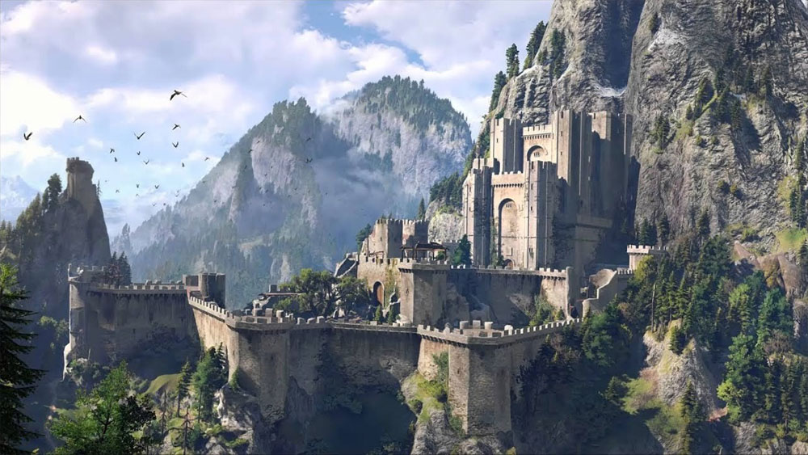

Cykl wiedźmiński (jeszcze wówczas nie planowany przez autora) zaczął się jako seria opowiadań, pierwotnie
publikowanych na łamach miesięcznika „Fantastyka”. Były głównie nowymi wersjami znanych legend i baśni
(nazywanymi wersjami postmodernistycznymi; sam autor w wywiadach twierdzi, że pisząc opowiadania jako
metodę twórczą wybrał euhemeryzację baśni).
Pierwszym z nich było opowiadanie Wiedźmin z grudnia 1986 roku, napisane na konkurs „Fantastyki”, w
którym zajęło III miejsce (I miejsce zajęło opowiadanie Wrócieeś Sneogg, wiedziaam... Marka S.
Huberatha).
Kolejne opowiadanie Droga, z której się nie wraca (niezwiązane bezpośrednio z postacią Geralta z Rivii)
ukazało się w sierpniowym numerze pisma w 1988 roku. Początkowo autor nie chciał nawiązywać w nim do
cyklu ze świata wiedźmina, jednak kiedy cykl ten zaczął powstawać, pojawiły się w nim nawiązania do
fabuły tego opowiadania. Jak wspomina pisarz, kiedy Droga, z której się nie wraca po raz pierwszy
ukazała się na łamach „Fantastyki”, dokonano poprawek redaktorskich bez zgody samego Sapkowskiego
(pierwotna wersja opowiadania została później opublikowana w zbiorze Coś się kończy, coś się zaczyna).
Pierwsze cztery opowiadania o Geralcie oraz Droga, z której się nie wraca, ukazały się w zbiorze
opowiadań Wiedźmin, który został opublikowany nakładem wydawnictwa Reporter. Później trzynaście
opowiadań wiedźmińskich ukazało się w dwóch zbiorach wydawnictwa SuperNowa – Ostatnie życzenie oraz
Miecz przeznaczenia. Dwa opowiadania pośrednio związane z cyklem – Droga, z której się nie wraca oraz
Coś się kończy, coś się zaczyna (opowiadanie-żart, opublikowane w 1994 w fanzinie „Czerwony Karzeł”,
mylnie odczytywane przez niektórych jako alternatywne zakończenie sagi o wiedźminie) znaleźć można w
przywołanym wcześniej zbiorze Coś się kończy, coś się zaczyna.
W 2002 roku, nakładem wydawnictwa Libros, zostały wydane dwa tomy antologii Opowieści o wiedźminie
zawierające 15 opowiadań jako zestawienie dziejów Geralta.
„Saga o wiedźminie” to pięć powieści o wiedźminie Geralcie (Krew elfów, Czas pogardy, Chrzest ognia,
Wieża Jaskółki, Pani Jeziora), w których Sapkowski łączy wiele wątków rozpoczętych w opowiadaniach oraz
dodaje nowe. Oprócz samego wiedźmina, główną bohaterką jest również Ciri – dziecko-niespodzianka znane
już z opowiadań. Nazwa „Saga o wiedźminie” została nadana przez wydawcę – Sapkowski zamierzał nazwać
sagę „Krew elfów”, zaś pierwszy tom miał być pierwotnie zatytułowany Lwiątko.
W wywiadzie dla Radia Gdańsk (20 stycznia 2012), Sapkowski zapowiedział kontynuację wiedźmińskich
przygód. Jako orientacyjną datę publikacji podał co najmniej rok lub dwa oczekiwania[1]. Sezon burz
został opublikowany 6 listopada 2013.
Oprócz Geralta, wiedźminami w książkach Sapkowskiego byli: Vesemir, Eskel, Lambert i Coën. Ciri została
przeszkolona w wiedźmińskim stylu walki i była nazywana wiedźminką, ale nie została poddana Próbie
Traw.
Vesemir był najstarszym (w sadze określonym jako: „kto wie, czy nie starszy niż Kaer Morhen”) wiedźminem
z Kaer Morhen. Mistrz miecza, nauczyciel szermierki, przekazywał Ciri swoją wiedzę o potworach. Nosił
siwą brodę. Spięty i zakłopotany w obecności Triss Merigold. Geralt w rozmowie z Iolą mówi, że Vesemir
był jego (przybranym) ojcem. Pojawia się w wizji Ciri na pustyni Korath, prowadzony na szafot.
Poza cyklem wiedźmińskim, Vesemir przybywa z Eskelem na ślub Geralta i Yennefer w opowiadaniu Coś się
kończy, coś się zaczyna.
W serialu i filmie Wiedźmin Vesemir, grany przez Jerzego Nowaka, jest kapłanem.
W grze komputerowej „Wiedźmin” jest jedną z pierwszych postaci pojawiających się w grze. Przyprowadza
nieprzytomnego po spotkaniu z Dzikim Gonem Geralta, a następnie uczestniczy w obronie Kaer Morhen
przeciwko bandytom Salamandry pod wodzą Azara Javeda. Występuje również w przygodzie „Cena neutralności”
dodanej w Edycji Rozszerzonej do gry. Głosu w obu przypadkach użyczył mu Miłogost Reczek.
Eskel był wiedźminem, przyjacielem Geralta z lat dziecięcych, podobnym mu wiekiem i wyglądem (z wyjątkiem
koloru włosów). Miał nieprzyjemną, metaliczną barwę głosu, a jego twarz szpeciła długa półokrągła
blizna. Pierwszy raz jest o nim mowa w pierwszym tomie sagi (Krew elfów). Następnie pojawia się w wizji
Ciri na pustyni Korath, prowadzony na szafot.
Poza cyklem wiedźmińskim, Eskel przybywa z Vesemirem na ślub Geralta i Yennefer w opowiadaniu Coś się
kończy, coś się zaczyna.
W grze komputerowej Wiedźmin głos pod Eskela podkłada Piotr Warszawski.
Eskel pojawia się również w grze komputerowej Wiedźmin 3: Dziki Gon.
Lambert był najmłodszym z wiedźminów przebywających w Kaer Morhen. Chłodny, opryskliwy, szczególnie wobec
Triss Merigold. Prowadził fizyczne szkolenia Ciri. Pojawia się w jej wizji na pustyni Korath, prowadzony
na szafot.
Lambert jest głównym bohaterem niezależnego filmu Pół wieku poezji później, pojawia się w serii gier
Wiedźmin.
Coën był wiedźminem nieco starszym od Lamberta. Pochodził z Poviss. Nosił krótką, czarną brodę, na jego
twarzy widniały blizny po przebytej ospie. Miał bardzo jasne, żółtozielone tęczówki i pocięte czerwonymi
niteczkami soczewki (skutek uboczny Próby Traw). Kiedy Geralt przybywa do Kaer Morhen z Ciri, Coën
zimuje w warowni po raz pierwszy. Prowadził szkolenia Ciri, odnosił się do niej przyjaźnie, czasem się z
nią bawił. Pojawia się w jej wizji na pustyni Korath, prowadzony na szafot. Coën zginął w bitwie pod
Brenną (Starymi Pupami).
Kaer Morhen (ze Starszej Mowy – Warownia Starego Morza,
w Starszych Runach – Caer a'Muirehen) – siedziba
wiedźmińskiej szkoły cechu Wilka.
Siedlisko wiedźminów, znajdujące się w górach w Kaedwen. W okolicy przepływa górny bieg rzeki Gwenllech.
W tym miejscu niegdyś trenowano młodych chłopców na wiedźminów, jednak po publikacji dzieła Monstrum,
albo wiedźmina opisanie, na zamek ruszyli fanatycy, zabijając wszystkich nauczycieli i kładąc kres
świetności wiedźmińskiego siedliszcza.
W zamku znajduje się Wielka Sala, kuchnia, magazyn, spiżarnia, stajnia, zbrojownia, gdzie przechowywano
wiedźmińskie miecze, medaliony i trochę innego sprzętu, biblioteka, kwatery wiedźminów i kwatery
przygotowane specjalnie dla czarodziejów, którzy kiedyś nadzorowali tu przebieg Próby Traw. W okolicy
zamku znajduje się Szlak — tor przeszkód, na którym trenowali młodzi wiedźmini (tzw. mordownia).
